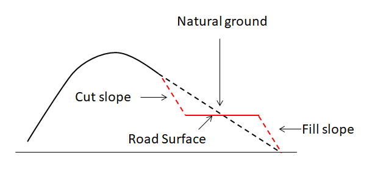
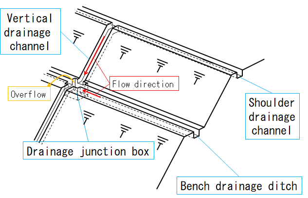
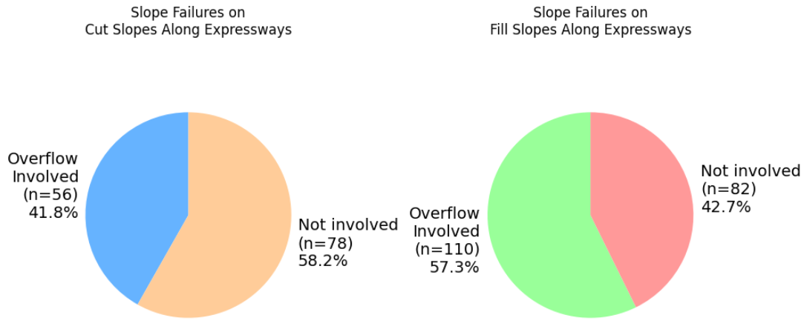
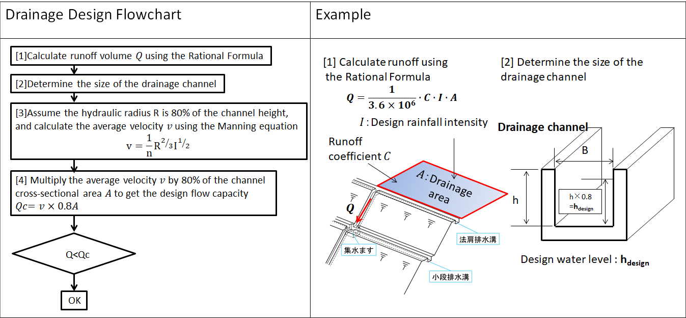
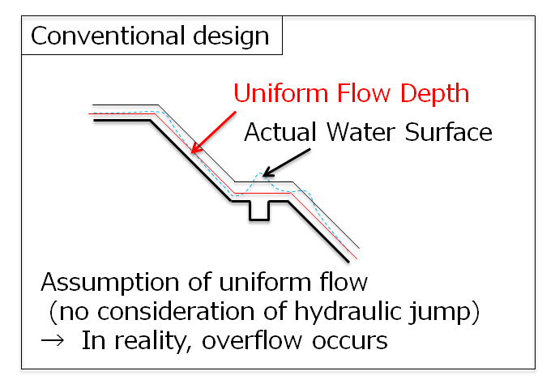
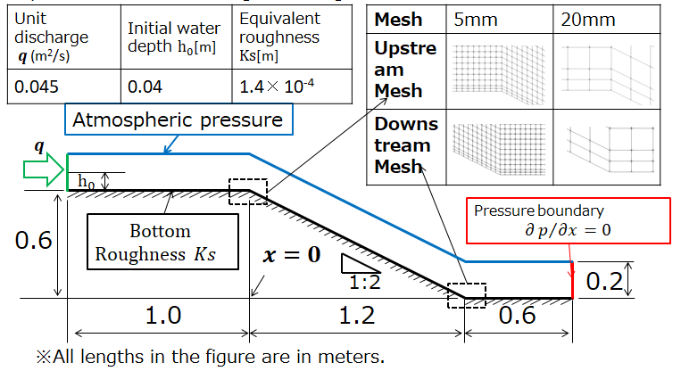
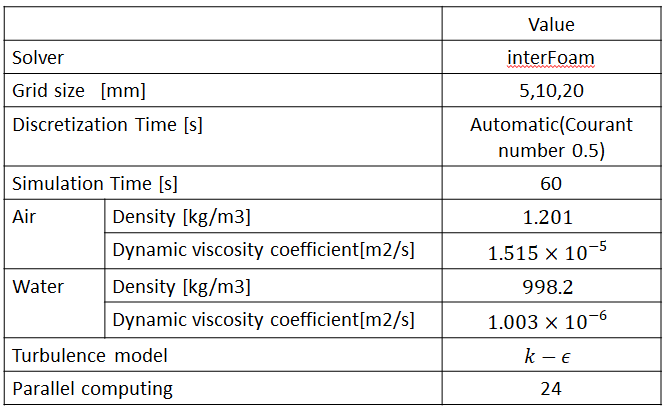

Verification and Validation of Water Surface Profile and Pressure Distributions in Steep Channels for Road Drainage Structures
| Name | Belongings |
|---|---|
| Hiroyuki Sannomiya | Sanei co.ltd |
Agenda
- Introduction
- Background & Problem Statement
- Research Objective and Approach
- Technical Approach
- Methodology
- Verification
- Validation
- Discussion
- Conclusion
- Future Work & QA
Introduction
Background & Problem Statement
- Road embankments consist of cut slopes and fill slopes, both typically protected by vegetation or concrete spraying.

Figure 1: Terms used to define road: cross-section
Introduction
Background & Problem Statement
- In recent years, heavy rainfall has caused overflow from drainage channels, leading to numerous slope failures[1].
- These failures often result in road closures and prolonged recovery, highlighting the urgent need for preventive measures.

Figure 2: Schematic diagram of slope drainage structure
Introduction
Background & Problem Statement
- In recent years, heavy rainfall has caused overflow from drainage channels, leading to numerous slope failures[1].
- These failures often result in road closures and prolonged recovery, highlighting the urgent need for preventive measures.

Figure 3: Pie charts of slope failure ratio
[1] Kato, Y., Ogata, K. and Kitamura, Y.: Relation between rain-induced slope disaster and drainage structures, 28th Conference of Kanto Branch of JSCE, pp. 464-465, 2001.
Introduction
Background & Problem Statement
- Conventional drainage design typically combines the rational formula to estimate peak runoff and Manning’s equation to size channels, assuming steady and uniform flow conditions.
- However, overflow at junctions is often caused by rapidly varied flow, such as hydraulic jumps, which are not considered in these methods.
- This indicates a significant gap in current design practices, and I believe there is a strong need to establish design methodologies that account for such flow transitions.

Figure 4: Conventional drainage design flow chart

Figure 5: Uniform flow depth and actual water surface
Introduction
Research Objective and Approach
Objective
- Accurately reproduce rapidly varied flow in steep open channels and clarify differences in physical phenomena.
Approach(V&V method)
- Conduct verification via grid convergence analysis using the VOF method.
- Validate results by comparison with physical experiments and simulations
Technical Approach
Methodology
- About V&V
- Verification: Are we solving the equations right?
- Purpose: Confirm that the equations are correctly solved.
- Methods: Algorithm checks, grid convergence studies, etc.
- Examples: Code verification, solution verification
- Validation: Are we solving the right equations?
- Purpose:Confirm that the model represents physical reality.
- Methods: Comparison with experimental data, tolerance criteria
- Monte Carlo simulations, Uncertainty Quantification (UQ)
- Verification: Are we solving the equations right?
Technical Approach
Verification(Governing Equations for Numerical Analysis)
- The computational solver used is interFoam, which handles incompressible, unsteady, isothermal two-phase gas-liquid flows.
- The governing equations solved include the continuity equation, Navier–Stokes equations, and the VOF transport equations, as shown below.
\[\nabla \cdot \boldsymbol{U} = 0 \\\] \[\frac{\partial \boldsymbol{U}}{\partial t} +\nabla \cdot (\rho \boldsymbol{U} \boldsymbol{U}) = - \frac{1}{\rho} \nabla p + \nu \nabla^2 \boldsymbol{U} + \boldsymbol{F_\sigma} + \boldsymbol{g} \] \[\frac{\partial \alpha}{\partial t} +\nabla \cdot (\alpha \boldsymbol{U} ) + \nabla \cdot (\alpha (1-\alpha) \boldsymbol{U}_r) = 0\]
Technical Approach
Verification(Calculation Conditions)
- Mesh sizes: 5 mm, 10 mm, 20 mm
- Atmospheric boundary condition with zero gauge pressure

Figure 6: Calculation conditions

Figure 7: Calculation conditions
Technical Approach
Verification(Assumptions)
- In the absence of an exact solution, solution verification is performed by conducting a grid convergence study.
- The Grid Convergence Index (GCI) method is applied to evaluate the numerical uncertainty and confirm that the simulation results converge with mesh refinement.
Richardson Extrapolation
The numerical solution \(\phi\) can be expressed as a Taylor series expansion with respect to grid spacing \(h\), assuming convergence toward a grid-independent (exact) solution \(\phi_e\):
\[ \phi = \phi_e + c_1 h + c_2 h^2 + c_3 h^3 + \cdots \]
- Coefficients \(c_1, c_2, c_3, \ldots\) are constants that do not depend on the grid.
- In CFD, numerical schemes typically have first-order or second-order accuracy.
For second-order schemes, the first-order error term disappears, i.e.,
\[ c_1 = 0 \]
Technical Approach
Discretization Error Assessment
Here, \(p\) is the observed order of convergence, and \(r_{21} = h_2 / h_1\) is the grid refinement ratio (\(h_1\) is the grid spacing of the finest mesh). \(f_1, f_2, f_3\) are the representative numerical results obtained from three different mesh sizes. \(F_s\) is the safety factor (1.25 is adopted for conservative estimation). \(f_{\text{ext}}\) is the extrapolated true solution, and \(GCI_{\text{fine}}\) is the estimated error band representing a 95% confidence interval for \(f_1\).
\[ p = \frac{\ln \left(\frac{|f_3 - f_2|}{|f_2 - f_1|} \right)}{\ln r_{21}} \]
\[ f_{\text{ext}} = \frac{r_{21}^p f_1 - f_2}{r_{21}^p - 1} \]
\[ GCI_{\text{fine}} = \frac{F_s |f_1 - f_2|}{r_{21}^p - 1} \]
Technical Approach
Validation
- Numerical results show good agreement with experimental data.
- High model validity confirmed; experimental uncertainty is taken into account.
Conclusion
- VOF method accurately reproduces steep open channel flows.
- Confirmed that pressure and water surface are within acceptable error at appropriate grid size.
- Applicable to performance-based design support of drainage structures.
Future Work
- Conduct full-scale (1:1) experiments of open channel and catch basin for further V&V.
- Predict h₁, h_max, h₂ based on energy conservation.
- Aim to develop performance-based design guidelines.